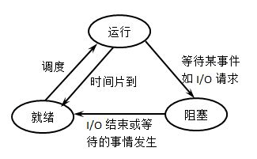

概念与区别
从本质上来说，一个进程就是一个正在执行的程序，它是系统进行资源分配和调度的基本单位，是操作系统结构的基础。每个进程都有自己的地址空间，包括可执行程序，程序的数据，栈，一组寄存器（程序计算器，栈指针以及其他运行程序需要的信息
线程有时被称为轻量级进程，是程序执行的最小执行流，它是进程的一个实体，是系统独立调度和分派的基本单位
进程和线程的区别：
- 地址空间：同一进程的线程共享本进程的地址空间，而进程之间则是独立的地址空间。
- 资源拥有：同一进程内的线程共享本进程的资源如内存、I/O、cpu等，但是进程之间的资源是独立的。进程切换时，消耗的资源大，效率高。所以涉及到频繁的切换时，使用线程要好于进程。同样如果要求同时进行并且又要共享某些变量的并发操作，只能用线程不能用进程
- 执行过程：每个独立的进程程有一个程序运行的入口、顺序执行序列和程序入口。但是线程不能独立执行，必须依存在应用程序中，由应用程序提供多个线程执行控制。
- 线程是处理器调度的基本单位，但是进程不是。
- 两者均可并发执行。
进程
进程的创建和终止
进程的创建主要有四个原因：系统初始化，正在运行的进程执行了创建进程的系统调用，用户请求创建一个进程以及批处理作业的初始化。
常见的就是一个进程调用了fork()函数创建新的进程。
进程终止的一些原因：工作完成正常退出，出错退出，严重错误，被其他进程杀死。
进程的状态和控制原语
进程有三种状态：运行态，阻塞态，就绪态。这三种状态的转换是：
就绪：当一个进程获得了除处理机以外的一切所需资源，一旦得到处理机即可运行，则称此进程处于就绪状态。
阻塞：也称为等待或睡眠状态，一个进程正在等待某一事件发生（例如请求I/O而等待I/O完成等）而暂时停止运行，这时即使把处理机分配给进程也无法运行，故称该进程处于阻塞状态。
运行：当一个进程在处理机上运行时，则称该进程处于运行状态。
注意不可能存在直接从阻塞态转换到执行态。
除了这三个基本状态还有一个挂起状态，新建状态，终止状态。
引起挂起状态的原因：终端用户的请求，父进程请求，负荷调节的需要，操作系统的需要。
用于控制进程的原语有：
创建原语（
Create）：创建一个就绪状态的进程，使进程从创建状态变迁为就绪状态。阻塞原语（
Block）：使进程从执行状态变迁为阻塞状态。唤醒原语（
Wakeup）：使进程从阻塞状态变迁为就绪状态。挂起原语（
Suspend）：将指定的进程或处于阻塞的进程挂起